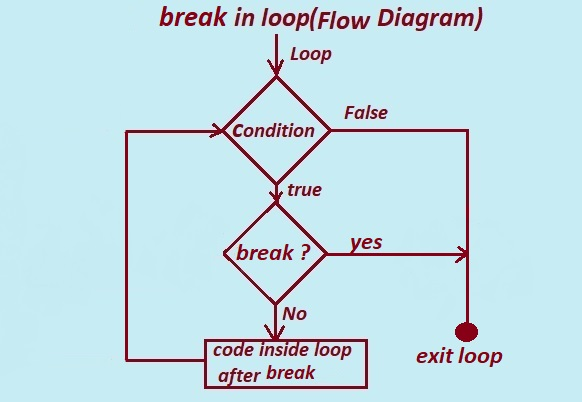

In this tutorial section we will learn what is break statement in C Language?.
What is break in C?
break: The break command in C program allows a programmer to terminate or exit a loop or the switch command. Or to bring the control out of the loop.
while ,do and for are the loops in C programming. When you use the break command inside a looping statement, then it end the loop and control transferes to the next command outside the loop.
You can use break command inside the nested loop or statements,the break command used in nested loop terminates the innermost or enclosing while,do,for or switch statement.
i. if the break statement is used inside a loop along with the if condition then if the condition becomes true the loop terminates immediately and the next statements after loop start executing.
ii. if the break statement is used inside a switch case after each switch case the break statement terminates a case after executing the case.
The break command or statement in C allow programmer to control the flow of programs by terminating loop or switch statement depending on certain condition.
It help the programmer to improve the execution and performance of the program.
The main purpose behind using break statement in C prograaming is that when you need to stop the execution of a loop without waiting for the condition to become false.
break Statement in for loop in C Language
Advantage using break in C programming Loops
1. The break statement is used to end or stop or teminate the current loop
2.The break statement makes the code optimized and efficient whe used inside loops in C programming.
i. while loop.
ii. do while loop.
iii. for loop.
3. break statement in C improves code maintainability readability .
4. Using break in C program can help to achive better control over the program flow .
5. break statement makes code easier to maintain and understand.
Disadvantage using break in C programming
1. It can only be used within a switch or loop statements.
2. The use of break statement in C program make code harder to understand and read.
3. In nested loop the use of break statement will only exit the innermost loop and will be confusing.
4. if the break statement fails to terminate the loop they can loop endlessly.

Given Diagram is the flowchart how break statement works in loops.
The Given flow chart is the break statement used inside a loops.
The flow chart simply shows the working of break statement.
1. At the start of the loop it checks for the perticular condition. If the tested condition is true then loop continues.
2. The condition for the break statement is tested inside the loop body. if the condition is satisfied then the control exit from the loop and stops the execution of the loop.
3. if The condition for the break statement tested inside the loop body is false , the control continue for the execution of statements inside the loop body. i.e. " code inside loop after break"
4. The loop continue execution till the condition is satisfied.
Note:
i. break terminates a loop and can not start over again.
ii. code below the break statement only executes when the continue statement is not encountered inside the loop body.

1. break in for loop:
The working of the break statement in for loop is as follows:
STEP 1: The Control enters in to the for loop.Control jumps to initilization section (init)
STEP 2: The Control Jumps to Condition Section and test the condition.
The statements inside the loop body starts execution after the loop condition is evaluated to true.
STEP 3: the if (condition) is tested and will be evaluated.
STEP 4a: If the condition is false, the normal execution will continue.
Executes the code // Code inside loop
STEP 4b: If the condition is true, the program loop terminates,stops the execution and control comes out of the loop.
STEP 5: Steps 2 to 4 will repeats till the end of the loop.
2. break in while loop:
The working of the break statement in while loop is as follows:
STEP 1: The Control enters in to the while loop and test the condition ,if the condition tested is true then the Control enters in to the while loops body.
STEP 2:
The loop’s execution starts after the loop condition is evaluated to be true.
STEP 3: The condition of the break statement (if (condition)) will be evaluated.
STEP 4a: If the condition is false( if(condition)),the break statement won't be executed but executes the the statemennt "// Code inside loop".
STEP 4b: If the condition is true, the loop terminates (end) and the program control will go outside the loop.
STEP 5: Steps 1 to 4 will repeats till the end of the loop or condition given in the loop is true.
C program to illustrate use of break in for loop
/* C program given below demonstrate the use of the break statement in for loop */
#include <stdio.h>
int main()
{
int i;
for (i = 0; i < 10; i++)
{
if (i == 5)
{
break;
}
printf("%d, ", i);
}
return 0;
}
Output:
0 1 2 3 4
Explanation : The program above displays the numbers from 0 to 4.
Step 1: int i;
The variable i is declared as integer to store integer numbers.
Step 2: The control enters into the for loop.
for (i = 1; i < 10; i++)
{
if (i == 5)
{
break;
}
printf("%d, ", i);
}
Explanation:
2.1 : intilize the variable i to 1 in intilization section of for loop. .i.e i=1
2.2 : control jumps to test the condition in the condition section , i<10 the condition tested is true i.e. 1<10 results in true.
a. if the condition tested if(i==5) evaluates to true, then the break statement inside if() terminates the loop and control comes out of the loop and stops the execution.
b. if the condition tested if(i==5) evaluates false then the break statement inside if() does not executes and executes the printf("%d, ",i);
Step 3: The process repeates till the value of i<10, And as soon as the value of i becomes 10( or the condition for the break is not triggered) the execution of the loop terminates and stops the execution.
And finally shows the final output.
C program to illustrate use of break in while loop
/* C program given below demonstrate the use of the break statement in while loop */
#include <stdio.h>
int main()
{
int count = 5;
while (count >= 0)
{
if (count == 2)
{
count--;
// exit the loop if count is equal to 2.
break;
}
printf("%d ", count);
count--;
}
return 0;
}
Output:
5 4 3
The program above displays number in reverse order between range 0 to 5
Explanation :
i. int count = 5;
The variable counter count is declared as int variable and assigned value 5. i.e count=5.
ii. control enters in to the while loop.
while (count >= 0)
test the condition expression which true (while(5>=0)) then control enters into the while loop body.
iii. And executes
if (count == 2)
{
count--;
// break the loop if it is equal to 2.
break;
}
Here condition if(count==2) tested is false( if(5==2)) so statements inside if dose not execute.
And start executing the rest of statement inside body of loop i.e.
iv.printf("%d ", count);
count--;
displays the value of count i.e. 5 on the output screen and decrement(count--) the value of count by 1 then count becomes 4 , count=4.
This process continues till the value of count=3.
when the value of count becomes 2 (count=2)then
the statement
if (count == 2)
{
count--;
// exit loop if the count is equal to 2.
break;
}
executes.
the if(count==2) is true (if(2==2)) then the value of count decremented by 1(count--)
the break statement terminates the loop and control come out of the loop.
v. Otherwise the statements
printf("%d ", count);
count--;
will execute till the condition while(count>=0) is true.
Previous Topic:-->> continue statement in C || Next topic:-->>Difference between while and do while for loop in C.